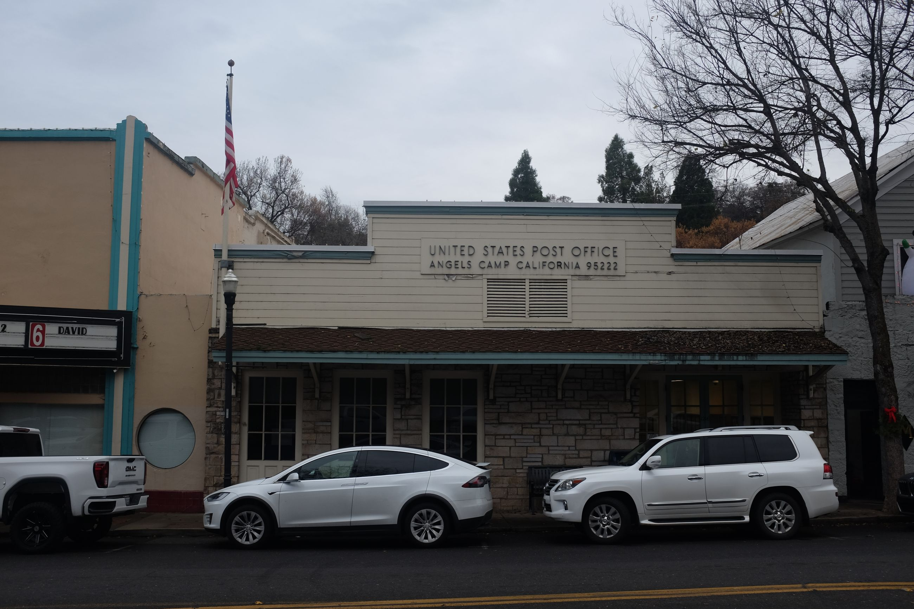
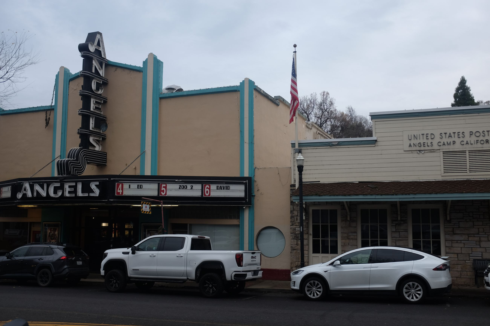
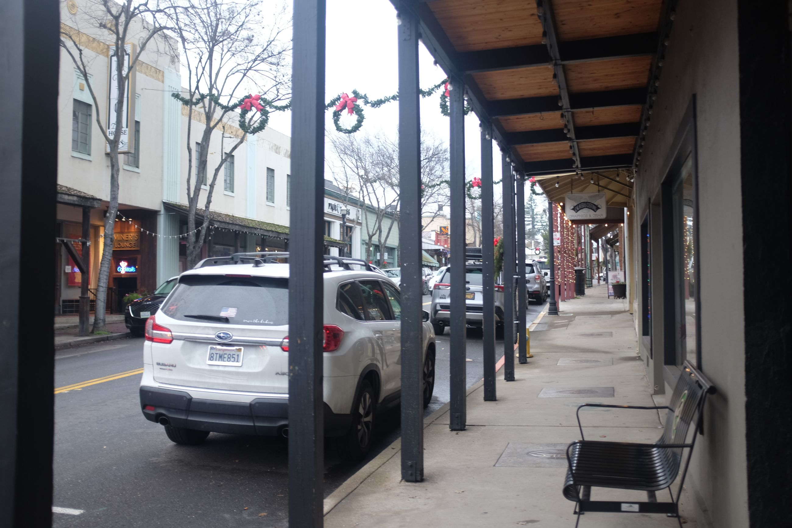

Unfortunately, by the time we get here, it's already dark and rainy.
On the way, there is a nice small town called Murphy's. We only drive by due to the rain, but it seems like a nice spot with winers, and a great place to grab a drink and dinner.
When we arrive to Angels Camp, a familiar sight. It looks a bit like Jamestown, with more to do. However, as it's getting late, the town has already begun closing, so we just pop into the museum to see something about a jumping frog competition then head downtown. Apparently, this town is known for jumping frogs since Mark Twain wrote about it here.
The architecture echoes that of Jamestown and Columbia by marrying old with new. Here's some pictures of the post office, a random cinema (they were showing Avatar -- the fire one -- that just came out) and also a random walkway.
  
We did stop by a place called The Parlor which had the best affogato I've had in a while. Highly recommend.
I wish I had more time in Murphy's and Angels Camp. We barely scratched the surface, having crossed five towns in a day. Each town, while they may start to look similar after seeing a few, seem to offer slightly different experiences. I'll have to come back to explore more someday.